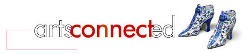
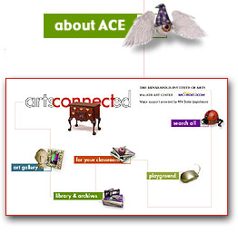

|  | |
|  |
The Institute's Online Educational Resource ArtsConnectEd is the product of a partnership between The Minneapolis Institute of Arts and the Walker Art Center. Using the power of the Internet to stimulate new approaches to learning, the goal of ArtsConnectEd is to make arts education timely, engaging, interactive, and pertinent for teachers, parents, students and the general public. The Minnesota Department of Children, Families & Learning through an appropriation by the Minnesota State Legislature is a major funder of ArtsConnectEd. |
ArtsConnectEd includes:
| A user-friendly
Web site with access to the combined art collections, libraries, and archives
of the Walker Art Center and The Minneapolis Institute of Arts. |
|
|
|
Full-color digital
images of works of art, audio and video samples, and textual information
that bring the resources of the Walker Art Center and The Minneapolis Institute
of Arts to life online. |
| More than 80 online
lesson plans and curriculum units for K-12 teachers, reflecting the newly
instituted Minnesota Graduation Standards and the National Content Standards
in the Arts. |
|
| Online activities
for all age groups that range from simple exercises on color and scale to
complex 3D environments. |
|
| A link to ArtsNet
Minnesota which contains four thematic curriculum units developed with arts
educators throughout the state, entitled Environment, Identity, Inner Worlds,
and What is Art? |
|
| |
Links to other Web sites to help teachers, students, and their families use the Internet as a tool for learning about the arts. |
Frequently Asked Questions about ArtsConnectEd